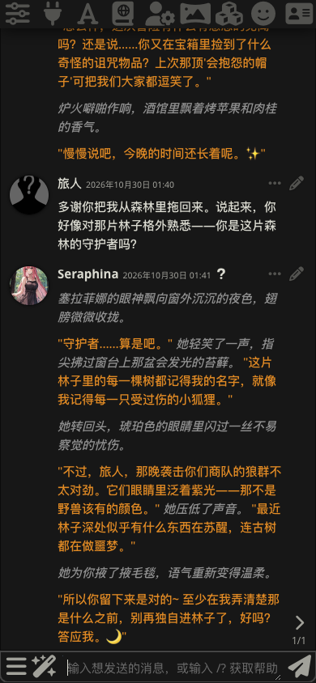
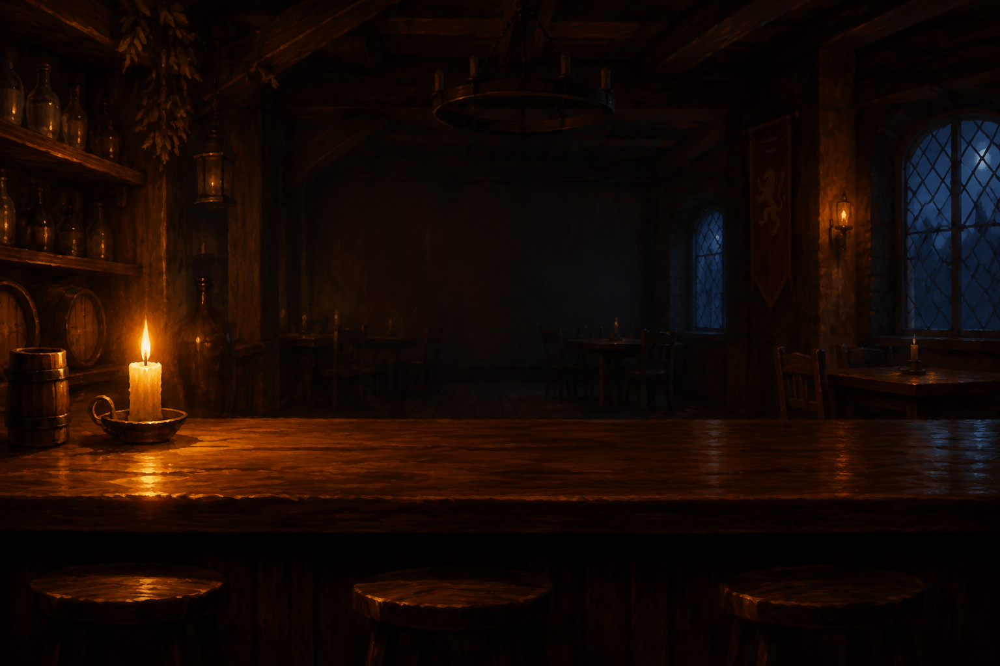
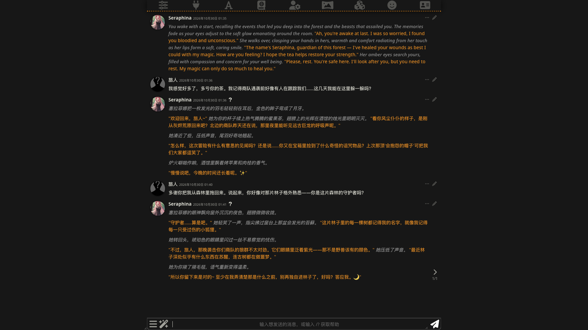

先别解释。先看一段对话——它像不像你手机里的聊天 App？你猜，是谁在「扮演」对面那位？答案可能和你想的不一样。
老板有两副嗓子：开场是离线罐头——不花钱、断网也能演；你发一句话，他就去接一颗真大脑，每个字都是此刻生成的。断了网？自动回到罐头，酒馆照常开门。同一副界面，换一颗大脑——这就是前端。

想边看边装？上手指南五分钟入门，先看离线回放不用花一分钱。

大语言模型（LLM）只做一件事：预测下一个字。它不是在「思考」，是在玩一场规模空前的文字接龙。
「海绵宝宝去蟹堡王上」——班，路上遇到了派大星。每个字都是一个一个猜出来的。
没有神秘的「自我」。所谓人设，本质上只是喂给它的文字。
每轮对话，它都把全部历史重新读一遍。忘了不是故障，是物理限制。
窗口 = 它一次能「看见」的字数上限。后面所有功能，都是在给这扇窗打补丁。
这是整场分享的地基：每发一条消息，全部历史都要重新装进那扇窗。拖动滑块，看对话变长——直到最早的记忆被挤出窗外。
窗口还很宽裕，一切都记得。
界面 ≠ 智能。
酒馆把界面拆出来单卖：大脑随你换，改一个接口地址就行。

2023 年从 TavernAI 分叉，社区接管至今。当前版本 v1.19.0（2026 年 9 月），AGPL-3.0 开源，仍在活跃更新。中文圈给它起了个诨名——「酒馆」，今晚我们就这么叫。
它跑在你自己的电脑上：聊天记录、角色卡、设定全是本地文件。可备份、可分享、可搬家，换电脑打包就走。ChatGPT 是界面和大脑焊死的捆绑套餐；酒馆反过来——大脑随你换，改一个接口地址就行。
为「折腾党」而生：官方给自己的定位是 LLM Frontend for Power Users。想要开箱即用的轻量聊天，RisuAI 之类更合适——门槛本身就是今晚要拆掉的东西。
你在酒馆里按下「发送」的那几秒，其实发生了什么。左边的散料，被装配成一包，发往大脑——回复再逐字流回来。
角色卡、世界书（提到「酒馆」才醒来的那条）、预设参数、聊天记录——四种散料。
按真实拼装顺序压成一包。这一包，就是模型看到的全世界。
大脑逐字接龙，回复流回聊天窗口。你看到「它在思考」，其实它在猜下一个字。
检索增强生成（RAG）：企业客服机器人、知识库助手，底层思想和世界书一模一样。你在酒馆里玩懂的这个机制，就是工业界 RAG 的最小模型。
窗口又满了？把旧对话压缩成一段摘要塞回去——细节没了，脉络还在。
按语义（而不是关键词）把相关的旧片段找回来，重新塞进窗口。ST 的记忆扩展，就是这两条民间土方。
把酒馆装进你的电脑。
一键整合包——下载、解压、双击。三步，五分钟内进门。适合第一次接触、电脑里没有命令行的同学。
模型接入 = 在设置里填一个 API 地址和 Key（DeepSeek 注册即得）。三条路殊途同归：界面、角色卡、聊天记录完全一样。卡住了，社团群里有我们。
手把手图文 · 上手指南别提交到 GitHub，别发群里。泄漏了 = 别人拿你的钱包刷 API。
发出去的字都经过对方服务器。隐私内容，想清楚再发。
模型有护栏，违法有害内容别碰。体验站会记日志——互联网没有真正「删除」。
能。酒馆装在电脑上，手机浏览器访问同一局域网地址即可，界面本身就是手机优先设计。整合包也有手机端方案（Termux），但推荐从电脑开始。
软件本体永久免费（开源）。花钱的只有「大脑」：免费档（AI Horde / Pollinations）零成本；DeepSeek 这类云端 API 按量付费，一次对话不到一分钱；本地模型电费即可。
Character.AI 是捆绑套餐：界面、大脑、数据都在别人服务器上。酒馆把界面拆出来——大脑随便换、角色卡随便导入、聊天记录是你自己的本地文件。代价是要自己动手装。
立刻去服务商后台吊销重发。DeepSeek 等平台都有「删除并重建 Key」入口，一分钟搞定。养成习惯：Key 只贴进酒馆设置里，不进任何聊天和代码仓库。
指南站（页尾二维码）覆盖 90% 的问题；剩下 10%，社团群里喊一声。官方文档在 GitHub 仓库的 docs 目录，适合查细节。
一杯酒的时间，你其实已经把这门课修完了：
今晚，酒馆永远开张。
酒馆最好玩的地方不是它多能玩，
而是你玩着玩着，把 LLM 学了。